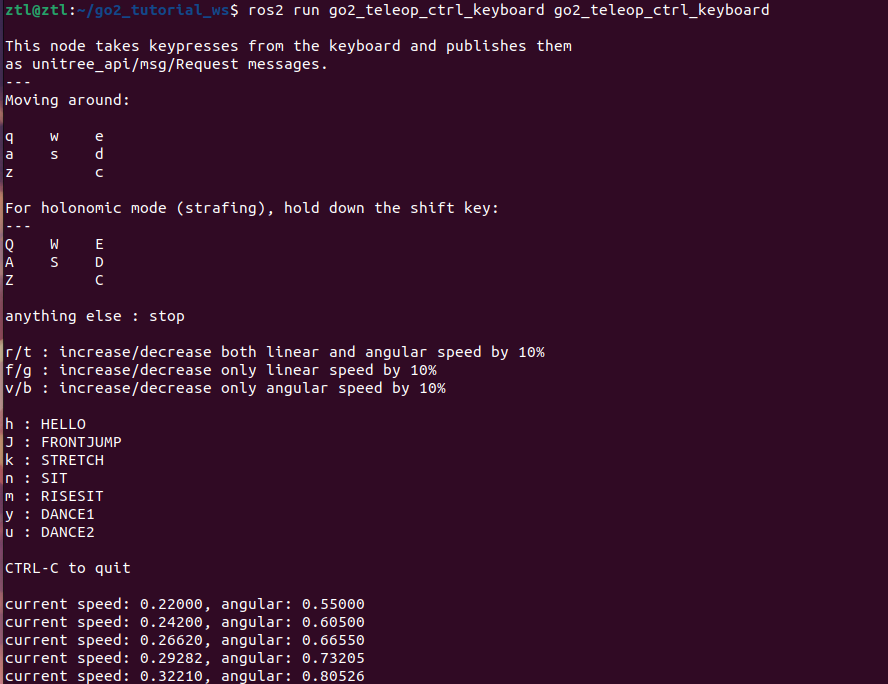

第 3 章 键盘控制节点¶
上一章我们已经认识了 Go2 的高层控制消息。这一章开始写第一个真正“能上手玩起来”的节点:你按下键盘，节点就把按键翻译成
Request，再直接发给 Go2。
本章你将学到¶
- 看懂
go2_teleop_ctrl_keyboard这类终端遥控节点的基本结构 - 理解
termios、tty、threading在“边读键盘边跑 ROS2”里的分工 - 掌握当前源码里的真实键位映射，而不是方向键那套旧口径
背景与原理¶
键盘控制节点的本质其实很朴素:它仍然是一个 Publisher。
不同的地方只在于，它的输入不来自传感器，也不来自另一个 ROS2 节点，而是来自终端里的按键事件。我们按了哪个键，节点就决定要往 /api/sport/request 发什么 unitree_api/msg/Request。
这件事听起来简单，真正写起来会有两个坑。
第一个坑是，普通的 input() 要等你按回车，根本不适合遥控。我们要的是“按下去立刻生效”，所以要用 termios 和 tty 把终端切到原始输入模式。
第二个坑是，ROS2 节点本身还得继续 spin()。所以源码用了一个子线程去跑 rclpy.spin()，主线程专门负责读键盘。这样两边才不会互相堵住。
架构总览¶
flowchart LR
A[键盘按键] --> B[go2_teleop_ctrl_keyboard]
B --> C["/api/sport/request<br/>unitree_api/msg/Request"]
C --> D[Go2 高层运动接口]这条链路里没有 /cmd_vel，也没有中间桥接节点。
也就是说，第 3 章和第 4 章虽然都能“遥控 Go2”，但思路完全不同:
- 第 3 章直接发 Go2 专有
Request - 第 4 章先发
Twist，再由桥接节点转成Request
环境准备¶
当前工作空间里，键盘包已经放在 src/base/go2_teleop_ctrl_keyboard/ 下。你先记住三个名字:
| 项目 | 真名 |
|---|---|
| 包名 | go2_teleop_ctrl_keyboard |
| 节点名 | teleop_ctrl_keyboard |
| 可执行入口 | go2_teleop_ctrl_keyboard |
这章后面所有编译和运行命令，都按这个口径来。
如果你想先确认可执行入口有没有注册对，可以看 setup.py 里的 console_scripts:
package_name = "go2_teleop_ctrl_keyboard"
entry_points = {
"console_scripts": [
"go2_teleop_ctrl_keyboard = "
"go2_teleop_ctrl_keyboard.go2_teleop_ctrl_keyboard:main",
],
}
实现步骤¶
步骤一:先把按键说明看懂¶
源码最上面有一段帮助字符串，节点启动时就会先打印它。里面最重要的是三组按键:
- 移动键
- 调速键
- 动作键
先把真实映射表记清楚:
| 类别 | 按键 | 实际行为 |
|---|---|---|
| 移动 | q w e |
前左转、前进、前右转 |
| 移动 | a s d |
左转、后退、右转 |
| 移动 | z c |
后右转、后左转 |
| 平移/全向 | Q W E |
前左平移、前进、前右平移 |
| 平移/全向 | A S D |
左平移、后退、右平移 |
| 平移/全向 | Z C |
后左平移、后右平移 |
| 调速 | r / t |
总线速度和角速度同时 +10% / -10% |
| 调速 | f / g |
只调线速度 +10% / -10% |
| 调速 | v / b |
只调角速度 +10% / -10% |
| 动作 | h |
HELLO |
| 动作 | J |
FRONTJUMP |
| 动作 | k |
STRETCH |
| 动作 | n |
SIT |
| 动作 | m |
RISESIT |
| 动作 | y |
DANCE1 |
| 动作 | u |
DANCE2 |
| 退出 | Ctrl-C |
退出节点 |
别再用方向键那套旧口径了
当前仓库的真实按键映射是 qwe/asd/zc 这一套九宫格风格，不是方向键、Space、+/-。如果你照旧资料去按，节点当然不会按你预期响应。
这里还有一个很细的源码事实:当前代码里并没有单独给 X 绑定全向后退键，真正有绑定的是 Q/W/E/A/S/D/Z/C 这 8 个大写键。
步骤二:看懂三张映射表¶
接下来这段代码是整章的核心，它把“键盘字符”映射成“Go2 动作”。
把下面这几段对应到 go2_teleop_ctrl_keyboard.py 去看:
sportModel = {
"h": ROBOT_SPORT_API_IDS["HELLO"],
"J": ROBOT_SPORT_API_IDS["FRONTJUMP"],
"k": ROBOT_SPORT_API_IDS["STRETCH"],
"n": ROBOT_SPORT_API_IDS["SIT"],
"m": ROBOT_SPORT_API_IDS["RISESIT"],
"y": ROBOT_SPORT_API_IDS["DANCE1"],
"u": ROBOT_SPORT_API_IDS["DANCE2"],
}
moveBindings = {
"w": (1, 0, 0, 0),
"e": (1, 0, 0, -1),
"a": (0, 0, 0, 1),
"d": (0, 0, 0, -1),
"q": (1, 0, 0, 1),
"s": (-1, 0, 0, 0),
"c": (-1, 0, 0, 1),
"z": (-1, 0, 0, -1),
"E": (1, -1, 0, 0),
"W": (1, 0, 0, 0),
"A": (0, 1, 0, 0),
"D": (0, -1, 0, 0),
"Q": (1, 1, 0, 0),
"S": (-1, 0, 0, 0),
"C": (-1, -1, 0, 0),
"Z": (-1, 1, 0, 0),
}
speedBindings = {
"r": (1.1, 1.1),
"t": (0.9, 0.9),
"f": (1.1, 1),
"g": (0.9, 1),
"v": (1, 1.1),
"b": (1, 0.9),
}
这三张表分工很清楚:
sportModel负责“按一下就触发某个离散动作”moveBindings负责“移动方向和旋转方向”speedBindings负责“把当前速度乘一个系数”
也正因为源码是“乘系数”，不是“设绝对值”，所以你连续按几次 r，速度会一档一档往上加。
步骤三:看懂节点本体怎么发消息¶
映射表有了之后，节点本体要做的事就简单很多。
先看节点初始化部分:
class TeleopNode(Node):
def __init__(self):
super().__init__("teleop_ctrl_keyboard")
self.pub = self.create_publisher(Request, "/api/sport/request", 10)
self.declare_parameter("speed", 0.2)
self.declare_parameter("angular", 0.5)
self.speed = self.get_parameter("speed").value
self.angular = self.get_parameter("angular").value
def publish(self, api_id, x=0.0, y=0.0, z=0.0):
req = Request()
req.header.identity.api_id = api_id
req.parameter = json.dumps({"x": x, "y": y, "z": z})
self.pub.publish(req)
这段代码里要记两个点。
第一，节点名是 teleop_ctrl_keyboard，不是 keyboard。你后面如果用 ros2 node list 看节点，一定会看到这个名字。
第二，它发布的始终是 Request，不是 Twist。所以第 3 章是 Go2 专有接口路线，第 4 章才是 ROS2 标准速度路线。
步骤四:主循环是怎么读键盘的¶
真正让“按一下就生效”的，是下面这套循环:
def getkey(settings):
tty.setraw(sys.stdin.fileno())
key = sys.stdin.read(1)
termios.tcsetattr(sys.stdin, termios.TCSADRAIN, settings)
return key
def main():
print(msg)
settings = termios.tcgetattr(sys.stdin)
rclpy.init()
teleop_node = TeleopNode()
spinner = threading.Thread(target=rclpy.spin, args=(teleop_node,))
spinner.start()
try:
while True:
key = getkey(settings)
if key == "\x03":
break
elif key in sportModel:
teleop_node.publish(sportModel[key])
elif key in moveBindings:
x_bind = moveBindings[key][0]
y_bind = moveBindings[key][1]
z_bind = moveBindings[key][3]
teleop_node.publish(
ROBOT_SPORT_API_IDS["MOVE"],
x=x_bind * teleop_node.speed,
y=y_bind * teleop_node.speed,
z=z_bind * teleop_node.angular,
)
elif key in speedBindings:
s_bind = speedBindings[key][0]
a_bind = speedBindings[key][1]
teleop_node.speed = s_bind * teleop_node.speed
teleop_node.angular = a_bind * teleop_node.angular
print(
"current speed: %.5f, angular: %.5f"
% (teleop_node.speed, teleop_node.angular)
)
else:
teleop_node.publish(ROBOT_SPORT_API_IDS["BALANCESTAND"])
finally:
rclpy.shutdown()
你不用一口气把每行都背下来，先记住流程就够了:
- 先把终端切到原始模式，读一个字符
- ROS2 节点放到子线程去
spin() - 主线程一直循环读键
- 根据按键去查三张映射表
- 查不到就发
BALANCESTAND，相当于“停住”
这里的“未知按键就停住”，是很典型的遥控保护思路。因为实时控制里，安全默认值应该是“停”，不是“继续沿用上一次命令”。
编译与运行¶
先把键盘包编译掉:
# 编译键盘遥控包，并重新加载环境
cd ~/unitree_go2_ws
colcon build --packages-select go2_teleop_ctrl_keyboard
source install/setup.bash
第一终端启动键盘节点:
# 启动键盘遥控节点
cd ~/unitree_go2_ws
source install/setup.bash
ros2 run go2_teleop_ctrl_keyboard go2_teleop_ctrl_keyboard
第二终端观察节点到底发了什么消息:
# 观察 /api/sport/request
cd ~/unitree_go2_ws
source install/setup.bash
ros2 topic echo /api/sport/request
如果你想先保守一点，可以在启动时把速度调小:
# 把默认线速度和角速度调低一点
cd ~/unitree_go2_ws
source install/setup.bash
ros2 run go2_teleop_ctrl_keyboard go2_teleop_ctrl_keyboard \
--ros-args -p speed:=0.1 -p angular:=0.2
第一次实机测试键盘时先小步试
键盘控制最容易出现的问题不是“代码错”，而是你按快了、速度给大了。第一次上真机时，先把 speed 和 angular 压低，短按单个方向键，侧后方站人，手里握好急停。
结果验证¶
这一章跑通后，你应该能稳定看到这些现象:
ros2 run go2_teleop_ctrl_keyboard go2_teleop_ctrl_keyboard能启动，并打印按键帮助- 按
q/w/e/a/s/d/z/c时，/api/sport/request里的api_id会切到MOVE - 按
h/J/k/n/m/y/u时，api_id会切到对应动作 - 按
r/t/f/g/v/b时，终端会打印新的speed和angular
推荐用下面两条命令交叉验证:
结果演示¶
下面这张截图里,左侧终端是键盘控制节点打印的按键说明,右侧终端是 /api/sport/request 的实际输出。只要按键后右侧消息跟着刷新,就说明“键盘输入 → Go2 高层 Request”这条链路已经打通。

常见问题¶
1. 按键没反应¶
现象:节点看起来启动了，但按键没有任何效果。
原因:最常见的是当前终端焦点不在运行键盘节点的那个窗口里。
解决:
- 直接点回运行
ros2 run的终端 - 再按一次
w或h - 同时观察另一个终端里的
/api/sport/request
2. 退出后终端回显乱了¶
现象:按 Ctrl-C 退出后，终端打字不回显或显示异常。
原因:原始模式的终端属性没有正确恢复。
解决:
- 先敲一次回车试试
- 还不行的话执行
reset - 下次调试时尽量用
Ctrl-C正常退出，不要直接强杀终端
3. 速度越按越大，机器人越来越猛¶
现象:r 连续按几次后，动作变得很激进。
原因:源码里的调速是“按比例乘上去”，不是“回到某个固定值”。
解决:
- 用
t/g/b把速度往回减 - 或者直接重启节点，让它回到默认
speed=0.2、angular=0.5
4. j 没反应，但 J 有反应¶
现象:你按小写 j 没事，按大写 J 才会前跳。
原因:当前源码绑定的是大写 J，不是小写 j。
解决:
- 按住
Shift再按j - 如果你只按小写，自然不会命中
sportModel
本章小结¶
这一章我们写出了第一份真正可交互的 Go2 遥控节点。
它背后的套路很值得记住:终端负责产生按键事件，映射表负责决定动作语义，ROS2 节点负责把最终结果发到 /api/sport/request。这其实就是“输入层 + 逻辑层 + 输出层”的最小工程拆分。
下一章我们会换一条更通用的路线，不再直接发 Go2 专有消息，而是先发 ROS2 标准 Twist，再通过桥接节点转成 Request。